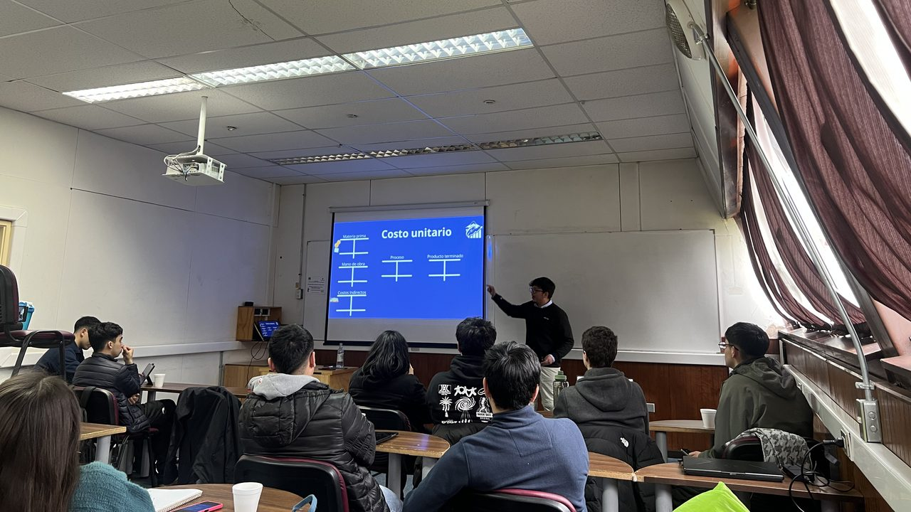

Ciclo de charlas del club: costos para PYMES, ahorro e inversión y mercado de capitales

Tres charlas preparadas y expuestas por miembros del club, pensadas para acercar las finanzas a quienes emprenden, a quienes quieren empezar a ahorrar y a quienes miran por primera vez el mercado financiero.
El pasado martes 8 de septiembre de 2026, el Club de Finanzas UACh realizó su primera sesión formativa abierta a la comunidad estudiantil, en la Sala 1 del Edificio Multimedia de la Sede Los Pinos. La jornada se organizó en tres charlas, cada una a cargo de miembros del club, que recorrieron la gestión de costos de un negocio pequeño, las decisiones de ahorro e inversión personal y el funcionamiento del mercado de capitales.
La instancia responde a uno de los propósitos del club: que los propios estudiantes compartan lo que dominan, lo expliquen con ejemplos cercanos y dejen ese conocimiento disponible para quienes no pudieron asistir.
Las charlas
Diego Vargas
🧾 Contabilidad de costos para PYMES
Diego mostró cómo un negocio pequeño puede ordenar sus números para saber cuánto le cuesta realmente lo que vende. Para aterrizarlo trabajó un caso práctico con Manis UACh, un emprendimiento de miembros del club: a partir de sus datos calculó el costo unitario de cada bolsa, el margen de ganancia frente al precio de mercado y el tiempo en que los socios recuperan su inversión inicial.
Martín explicó la diferencia entre ahorrar e invertir y por qué conviene empezar temprano. Revisó el Ahorro Previsional Voluntario (APV) como una alternativa concreta para comenzar y mostró el efecto del interés compuesto: cómo los aportes constantes, sumados a la rentabilidad que se reinvierte, hacen crecer el capital con el paso de los años.
Video disponible próximamente
Enzo Solano y Carlos
🏛️ Introducción al mercado de capitales
Enzo y Carlos presentaron los principales tipos de inversión del mercado financiero. Partieron por la distinción entre mercado primario y secundario, y desde ahí revisaron qué significa comprar acciones, en qué se diferencia el trading de la inversión a largo plazo y cómo los ETF permiten diversificar con un solo instrumento.
Agradecemos a Diego, Martín, Enzo y Carlos por preparar sus exposiciones, y a todos quienes asistieron y participaron con sus preguntas. Seguiremos abriendo estos espacios durante el semestre.